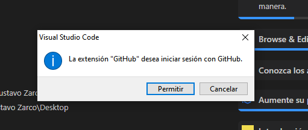
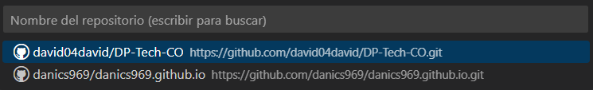
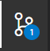
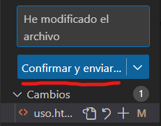
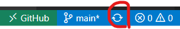

Las extensiones que vamos a usar son las siguiente: Azure Repos Funciones, GitHub Codespaces Funciones, GitHub Pull Requests and Issues, GitHub Repositories, GitHub Repositories Funciones.
Para vincular la extension con el perfil de GitHub, pinchamos en el explorador de Visual Studio Code y en Open Remote Repository, le damos a la primera opcion que es open Repository from Github.

Le damos a permitir y nos llevara a nuestro perfil de Github damos a permitir y ya saldran los repositorios.

Elegimos el repositorio y ya nos saldrá los archivos del repositorio.
Para guardar cambios en el Visual Studio Code, vamos a editar el texto, y pinchamos en Control de codigo fuente

Y ahora ponemos un comentario de lo que hemos cambiado para que los demas contrubuidores sepan que han cambiado

Para actualizar los cambios que han hecho los contribuidores tenemos que pinchar en esta rueda
